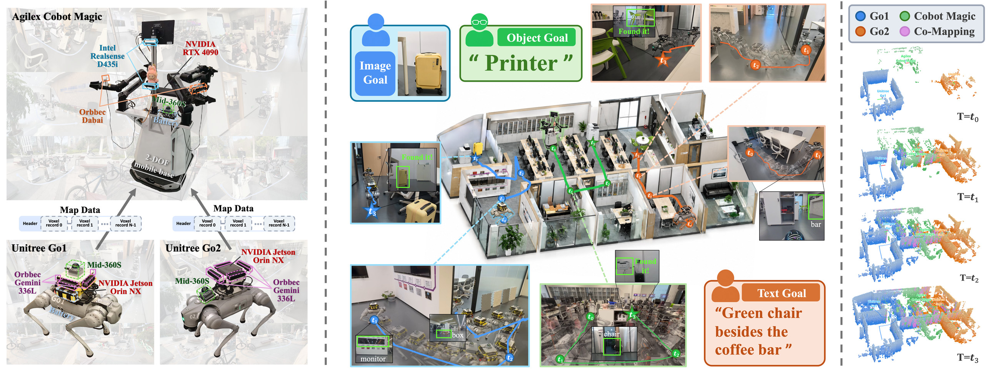

HiGA

HiGA, trained. A transformer over agent, goal, and map tokens assigns goals to agents; a frozen open-vocabulary policy navigates. Flames mark trained modules, snowflakes frozen ones.
HM3D-M³
HM3D-M³: A Benchmark for Multi-Agent, Multi-Modal, Multi-Object Goal Navigation
1Nanjing University2Nanjing Normal University3Institute of Automation, Chinese Academy of Sciences *Equal Contribution, †Corresponding Author
Abstract
Rapid progress in AI agents and robotics makes it a matter of the near future that humans are served by a team of robots. Such a team will receive several goals at once, each specified in whatever form is convenient for the human, such as a category name, a photo, or a spoken description. Existing benchmarks study multi-agent, multi-modal, and multi-object goal navigation in isolation, and a benchmark that places all three in one episode is missing. To fill this gap, we introduce HM3D-M³.
A team of K agents starts at distributed locations in a photorealistic indoor scene and searches for an unordered set of M object goals, each given as an open-vocabulary category, an instance image, or an instance description. HM3D-M³ provides 1,000 validation episodes over 3,926 goals from 379 open-vocabulary categories, 100K observation–assignment training samples, and two team-level metrics, goal-level SR and makespan-normalized SPL. We further contribute two baselines. HiGA is a trained hierarchical goal assigner on top of a frozen open-vocabulary navigation policy, and LaViRA-M³ is a training-free team of VLM agents with shared mapping and progress analysis. Adapted multi-robot and zero-shot methods reach 16–27% SR, while our baselines reach 38–41% with complementary strengths and distinct failure modes. Furthermore, we deploy LaViRA-M³ on a heterogeneous three-robot team.
Comparison with Related Benchmarks
HM3D-M³ is the first benchmark to place multi-agent, multi-modal, and multi-object goal navigation in one episode.
| Benchmark | Venue | Multi-agent | Multi-goal | Unordered goals | Open vocab | ON | TN | IIN | Modalities in one episode |
|---|---|---|---|---|---|---|---|---|---|
| ObjectNav | arXiv'20 | ✗ | ✗ | — | ✗ | ✓ | ✗ | ✗ | ✗ |
| RoboTHOR | CVPR'20 | ✗ | ✗ | — | ✗ | ✓ | ✗ | ✗ | ✗ |
| MultiON | NeurIPS'20 | ✗ | ✓ | ✗ | ✗ | ✓ | ✗ | ✗ | ✗ |
| CollaVN | NeurIPS'21 | ✓ | ✗ | — | ✗ | ✗ | ✗ | ✗ | ✗ |
| InstanceImageNav | arXiv'22 | ✗ | ✗ | — | ✗ | ✗ | ✗ | ✓ | ✗ |
| HM3D-OVON | IROS'24 | ✗ | ✗ | — | ✓ | ✓ | ✗ | ✗ | ✗ |
| GOAT-Bench | CVPR'24 | ✗ | ✓ | ✗ | ✓ | ✓ | ✓ | ✓ | ✓ |
| Habitat-MAS | ICLR'25 | ✓ | ✓ | ✓ | ✗ | ✓ | ✗ | ✗ | ✗ |
| HM3D-MFMON | arXiv'26 | ✗ | ✓ | ✗ | ✗ | ✓ | ✗ | ✗ | ✗ |
| HM3D-M³ (ours) | — | ✓ | ✓ | ✓ | ✓ | ✓ | ✓ | ✓ | ✓ |
Swipe the table sideways to see all columns.
Multi-Agent, Multi-Modal, and Multi-Object
A team of K ∈ {2, 3, 4} agents shares a map and searches for M ∈ {3, 4, 5} unordered goals, each given as a category (ON), an instance image (IIN), or an instance description (TN); a goal is found once any agent declares it within 1 m of the instance.

Benchmark statistics: 1,000 validation episodes on 36 held-out scenes, with 3,926 goals from 379 categories (1,299 ON / 1,313 TN / 1,314 IIN), and 100K training samples on disjoint scenes.
Baselines
Two baselines, two paradigms: HiGA (trained) assigns goals to agents with a transformer over agent, goal, and map tokens, on top of a frozen open-vocabulary policy; LaViRA-M³ (training-free) runs a team of language–vision–robot VLM agents that share a top-down map, a goal board, and progress analysis.
HiGA, trained. A transformer over agent, goal, and map tokens assigns goals to agents; a frozen open-vocabulary policy navigates. Flames mark trained modules, snowflakes frozen ones.

LaViRA-M³, training-free. The team shares a top-down map, a goal board, and progress analysis; no goal is ever explicitly assigned.
Results
Validation split, 1,000 episodes. ON / TN / IIN are per-modality goal found rates.
| Method | Coordination | SR ↑ | SPL ↑ | ON | TN | IIN |
|---|---|---|---|---|---|---|
| VLFM | independent agents on a shared map | 16.1 | 11.8 | 24.5 | 17.7 | 5.9 |
| EGO-Swarm | geometric dispersion | 23.7 | 10.7 | 35.5 | 28.0 | 7.5 |
| Co-NavGPT2 | centralized VLM frontier allocation | 24.5 | 9.4 | 37.3 | 28.8 | 7.6 |
| DM³-Nav | decentralized intent broadcasting | 26.6 | 9.9 | 35.9 | 30.4 | 14.2 |
| HiGA (ours) | learned goal assignment | 37.9 | 7.1 | 53.0 | 40.2 | 18.8 |
| LaViRA-M³ (ours) | shared goal board and progress analysis | 41.0 | 20.3 | 38.6 | 40.9 | 41.4 |
Swipe the table sideways to see all columns.
Adapted methods find 16–27% of goals; ours reach 38–41%. HiGA leads on category goals, LaViRA-M³ on instance goals and efficiency — neither paradigm dominates.
Qualitative and Failure Analysis
Failure attribution: LaViRA-M³ misses 59.0% of goals, mostly at claim time (41.8% pose miss); HiGA misses 62.1%, mostly in perception (25.7% failed approach, 16.4% undetected nearby). The two failure profiles are complementary.

Left: a K = 4, M = 3 LaViRA-M³ episode. Right: where missed goals go — (a) LaViRA-M³, (b) HiGA.
Real-World Deployment

We deploy LaViRA-M³ on three heterogeneous robots in an office: an Agilex Cobot Magic, a Unitree Go1, and a Unitree Go2. The robots exchange the shared map as voxel records over Wi-Fi, along with the goal board and progress analysis, through the same channels as in simulation. The figure shows a run with three goals, an image of a yellow suitcase, the category “printer”, and the description “green chair besides the coffee bar”, with first-person views from t0 to t3 and the shared map growing over time, colored by robot and pink where more than one robot mapped. Real-World Demo 1 is the full video of this run.
BibTeX
@misc{hm3dm3,
title = {HM3D-M$^3$: A Benchmark for Multi-Agent, Multi-Modal, Multi-Object Goal Navigation},
author = {Ding, Hongyu and Xu, Kanyu and Chen, Mingjia and Chen, Zixuan and Shi, Jieqi and Huo, Jing and Zhang, Yifan and Gao, Yang},
year = {2026},
eprint = {2610.20121},
archivePrefix = {arXiv},
primaryClass = {cs.RO},
url = {https://arxiv.org/abs/2610.20121}
}